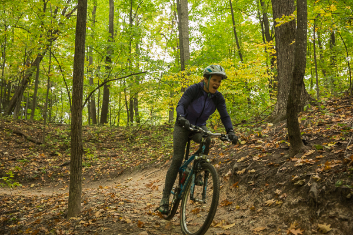

If you haven’t figured it out by now, The Bro’d Trip is part of Merrell’s Global Ambassador Program. And if you haven’t figure it out by now, we love working with them. Not only do they send us top notch clothes and shoes more often than we find a laundromat, but their entire team in Grand Rapids, Michigan is top notch too.
In fact, we wanted so badly to meet the faces behind the brand that we worked a tour of Merrell HQ into our contract, legally binding them to hang out with us (MUAHAHA)!

But turns out the joke was on us, because they took it a step further to make our time in Grand Rapids even bigger and better than we were hoping. In addition to a very thorough guide to the Upper Peninsula, they planned 3 full days of “Merrell Fun” in their stomping grounds.
Original photo lost in the archive
Expected file: AK8A1392.jpg
As you can imagine, the Merrell team members love to get outside and didn’t seem to mind showing a couple full-time tourists around their part of The Mitten in between meetings. After we got our highly anticipated tour of the office, we were driven to Speed Merchants Bicycle Shop to rent a couple full suspension bikes for a lap around the Merrell Trails.
Original photo lost in the archive
Expected file: AK8A1438.jpg
Merrell sponsors a circuit of trails near the office which gives the community a well-groomed stretch of dirt, rocks, and obstacles to get rowdy on.
Original photo lost in the archive
Expected file: AK8A1411.jpg
Members of the marketing, finance, and product development departments were kind enough to take some time out of their day to show us the trail. Sue, Charlie, and Jeff seemed more than comfortable on the flowy track, racing over rocks and squeezing between trees. Not being a very experienced mountain biker, I had a little more difficulty getting the hang of the terrain. I’m not used to having to ride over rocks and narrow bridges, or threading the needle between two trees without clipping my handle bars. Throw in pedaling and shifting gears and I’ve got my hands a little too full. Except for the downhill sections. I got the hang of those pretty quick and went as fast as I could!
Original photo lost in the archive
Expected file: AK8A1385.jpg
Despite my lack of expertise, everyone was really relaxed about it. Charlie kept close behind me, coaching me around sharp switchbacks, over bridges, and through those pesky trees. Jeff led the way and Sue was always there with words of encouragement. Before I knew it we were back at the parking lot.
Original photo lost in the archive
Expected file: MG_7605-1-1.jpg
But the first day of fun was far from over. After a quick lunch and some work back at HQ, a few more members of the marketing department took us to Robinette’s, an apple orchard with a lot of history…and a lot of apples.
Original photo lost in the archive
Expected file: AK8A1463.jpg
First thing on our to-do list was to pick some apples. After we’d picked our fill, we made our way to a corn maze. Luckily, Lauren took the reins with the corn maze map and made it her personal mission to get us through without having to use the dreaded “Quitters Exit.” After some aimless wandering, riddle solving, and plenty of laughing, we made it out! At that point, it was time for some fresh apple cider and donuts. Can’t say no to that!
Original photo lost in the archive
Expected file: AK8A1514.jpg
After a night at Wabasis Lake Campground, we met Leslie and Erik for an early morning of fishing on the Muskegon River. The early wake-up call was made easier by the coffee, breakfast sandwiches, and donuts they brought with them. And before we knew it, we were loading onto two fishing boats. We pulled our hoods over our heads to block the cold as we raced upstream to our first spot of the day. After tossing some donut holes from boat to boat, it was time to catch some fish.
Original photo lost in the archive
Expected file: AK8A1515.jpg
The guides rigged our baits and taught us the correct technique to drop the line and let it drift a ways downstream in hopes of attracting the attention of a steelhead or brown trout. After a handful of drifts, nobody seemed to be having much luck catching fish. Although we did have some delicious brisket and garlic bread on the bow, courtesy of our awesome guides.
Original photo lost in the archive
Expected file: AK8A1493.jpg
Leslie had the heaviest catch of the day, a lump of weeds. Erik caught a nice fallen leaf, the “vegetarian” catch of the day. And I swear I had a huge steelhead on the line before it broke off with my bait. Justin was the only one with real catches. He snagged a steelhead and a brown trout. We’re used to deep sea fishing at home in Florida so they seemed small to us. But our guides (and everyone at the office that Justin showed the pictures to) assured us that they were both fine catches!
Original photo lost in the archive
Expected file: AK8A1554.jpg
Our last day in Grand Rapids, we went to the office to say see ya later to the team. Shortly after, we met with Adam, a sales rep and fellow road warrior. He taught us a thing or two about disc golf. Okay, he tried to teach us but we didn’t really figure it out. We had no idea but there are actual driver and putter discs and they’re way tougher to throw than your typical frisbee.
Original photo lost in the archive
Expected file: AK8A1533.jpg
Adam made us look bad at every tee box. He started facing backwards and spun around like a discus thrower, slinging it down the fairway almost perfectly every time. Justin struggled getting his drives to stay on the fairway. And I opted for the Happy Gilmore swing of disc golf, the tomahawk.
Original photo lost in the archive
Expected file: AK8A1537.jpg
I couldn’t get the disc to cooperate with a normal throw for the life of me. So Adam taught me the tomahawk technique. Apparently it’s a real thing but it felt awfully goofy to me. While he and Justin were throwing across the chest like you’d expect, I was throwing it like a baseball. But when done right, the disc will turn onto it’s side and get some pretty good distance!
Original photo lost in the archive
Expected file: AK8A1546.jpg
The putter discs feel a bit more like the typical frisbee. They don’t bounce and skid as much if (and when) you miss the basket, keeping your disc from escaping the green. This was a bit easier than driving and the sound of the disc hitting the chains is oddly satisfying.
Thankfully Adam had no need to keep score as we took our time getting used to throwing the discs and getting to know each other. But he wasn’t shy in mentioning that we were, in fact, pretty awful at disc golf.
That’s okay, these Michiganders had a leg up on us with home-field advantage. Maybe one day we will get them to come live van life with us for a few days and see how they do?